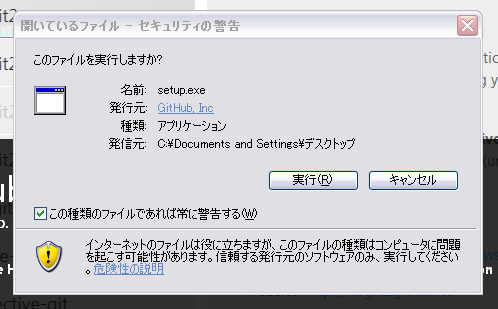
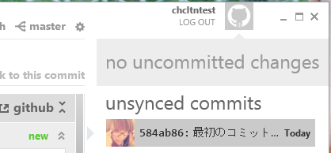

by SHOKO OYAMADA (chocolatina) @ paperboy&co.{
SVNのようなバージョン管理システムのいまどきのやつ
使えるとモテるらしい。けどモテた覚えがない。
SVNとはリポジトリの持ち方などがちょっと違う
別にプログラムじゃなくてもいろんな更新履歴を管理してよい。
更新履歴や差分が混乱しないように、
みんなが仲良く開発できるように使っている機能。
※でも実際は混乱したりもしますね。
更新履歴をためておく場所です。
gitでは、リポジトリには2種類あります。
「自分の作業用リポジトリ」と
「公開用リポジトリ」です。
今日は、
自分のPC内のフォルダ＝自分の作業用リポジトリ
github＝公開用リポジトリ
として話をします。
gitで管理した更新履歴を置いておく場所。
完成したものを見せるんじゃなく、
開発途中の履歴を見せる。
普段見えない裏側のソースコードも見える。
履歴をちょこちょこ送れるので、開発してる！感が出せるのでエンジニアに人気。
人のソースコードに手を入れて送ったりもできるらしい。
別にプログラムじゃなくてもいろんな更新履歴を管理してよい。
でも交換日記とかを管理するのはやめましょう。
自分のPC内のフォルダに置いたサイトを
gitでバージョン管理して
githubにpublishして
モテよう
※モテるかどうかは分からない
githubでアカウントを作成してください。
まずは無料プランで大丈夫です。
自分のパソコン内に、git管理したいフォルダを作ります。
ここでは「chcltntest」というフォルダ名にします。
githubで、インストールファイルをダウンロードします。
インストールを進めます。

Acceptします。
ちょっと時間がかかるので、お茶でもして待ちます。
再起動が必要なので、Yesします。
再起動するとこんな画面になります。Installを押します。
猫が頑張るのでしばしお待ちください。
インストールが完了しました。githubのアカウントとパスワードでログインします。
名前とメールアドレスを入力します。
まだリポジトリがありませんよと言われます。
「dashboard」をクリックします。
新しくリポジトリを作りますか？と聞かれます。
新しいのを作りたいので、create oneをクリックします。
リポジトリ名と、git管理したいフォルダの場所「C:\chcltntest」を入力します。
リポジトリ名は好きなもので大丈夫ですが、フォルダ名と一緒だと分かりやすいです。
入力したらCREATEを押します。
おめでとう！リポジトリが出来ました。
青くて小さい矢印をクリックすると、リポジトリの中が見られます。
リポジトリは出来ましたが、まだ一度もコミットしていないので、
ここでコミットしてあげます。
コミットメッセージを入力して「コミット」ボタンを押します。
コミットできました！おめでとう！

ためしに何か、自分の好きなものを、git管理しているフォルダの中に置いてみましょう。
ここではindex.htmlを置きます。
そうするとすぐ、画面に「uncomitted changes」と出ます。
まだコミットしてない変更がありますよー、ということです。
詳しく見たいのでSHOWを押します。
先ほどと同じようにコミットメッセージを入力してコミットしましょう。
さて、コミットメッセージが溜まってきました。
そろそろみんなにこの変更履歴を見せたい。
わたし、仕事してる！感を出したい。そんな気持ちでいっぱいです。
みんなにこの変更履歴を見せるには、githubのサーバーに送る必要があります。
publishを押しましょう。
in syncと言われたら、publish完了です。
https://github.com/ユーザー名/リポジトリ名
にアクセスすると、githubサーバーに送られた変更履歴を確認できます。
これで完了です。
また何か、ファイルに変更があったら、コミットして、
コミットメッセージが溜まったらキリのいいところでpublish、
という風に進めましょう。
おめでとう！
github for Windowsをインストールする。
それが終わったらコミットしてpublishを繰り返す、が主な流れ。
複数人で開発するときは、他にpullやbranchなどを使って作業します。
by SHOKO OYAMADA (chocolatina) @ paperboy&co.{